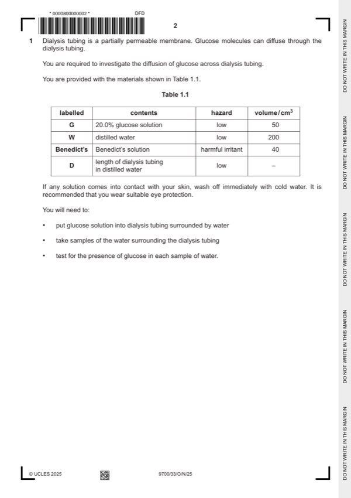

Question 1

Original paper page 2
Part 1(a)(i) — solution
states 19 cm3 as the volume of distilled water, W to use ; 1
Mark points
- Include the ideas shown in the solution above.
Part 1(a)(ii) — solution
1 shows transfer of 10cm3 to each beaker from the previous beaker ; 2
Mark points
- Include the ideas shown in the solution above.
Part 1(a)(iii) — solution
states the volume of Benedict’s to add as 2 cm3 or a volume greater than 2 cm3 and explains that this is because equal or 1
excess volume of Benedict’s solution is needed ;
Mark points
- Include the ideas shown in the solution above.
Part 1(a)(iv) — solution
results show the correct trend for times of known concentrations, the higher the percentage concentration of glucose the 1
shorter the time to first colour change ;
Mark points
- Include the ideas shown in the solution above.
Part 1(a)(v) — solution
1 (heading for independent variable) 4
sample time and minutes and to the left of the dependent variable ;
Mark points
- Include the ideas shown in the solution above.
Part 1(a)(vi) — solution
states source of error as the time to first colour change is subjective ; 1
Mark points
- Include the ideas shown in the solution above.
Part 1(a)(vii) — solution
results used correctly to estimate the concentration of glucose in the samples taken at 5, 10 and 15 minutes ; 1
Mark points
- Include the ideas shown in the solution above.
Part 1(a)(viii) — solution
(concentration higher at 15 minutes) glucose had more time to diffuse out of the dialysis tubing into the water ; 1
Mark points
- Include the ideas shown in the solution above.
Part 1(b)(i) — solution
1 x-axis: time sample was taken from the blood / min 4
and
y-axis: concentration in the blood / arbitrary units ;
Mark points
- Include the ideas shown in the solution above.
Part 1(b)(ii) — solution
1 shows (280 – 75) / 280 100 ; 2
Mark points
- Include the ideas shown in the solution above.
Part 1(b)(iii) — solution
1 (0 to 10 minutes) reference to a steep concentration gradient (between the blood and dialysate) ; 2
Mark points
- Include the ideas shown in the solution above.